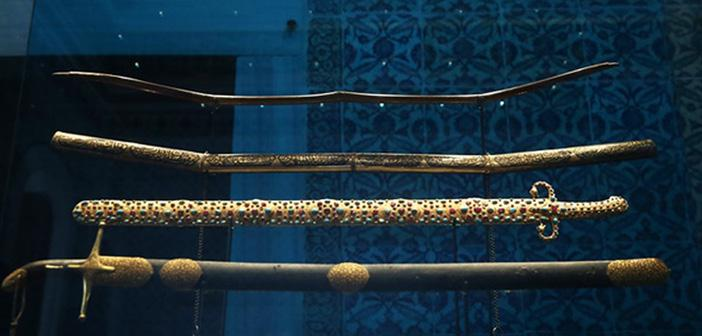

Topkapı Sarayı, İstanbul Sarayburnu'nda, Osmanlı İmparatorluğu'nun 600
yıllık tarihinin 400 yılı boyunca, devletin idare merkezi olarak
kullanılan ve Osmanlı padişahlarının yaşadığı saraydır. Bir zamanlar
içinde 4.000'e yakın insan yaşamıştır.
Topkapı Sarayı Fatih Sultan Mehmed tarafından 1478’de yaptırılmış,
Abdülmecid’in Dolmabahçe Sarayı’nı yaptırmasına kadar yaklaşık 380 sene
boyunca devletin idare merkezi ve Osmanlı padişahlarının resmi
ikâmetgâhı olmuştur. Kuruluş yıllarında yaklaşık 700.000 m²'lik bir
alanda yer alan sarayın bugünkü alanı 80.000 m²'dir.
Topkapı Sarayı, saray halkının Dolmabahçe Sarayı, Yıldız Sarayı ve diğer
saraylarda yaşamaya başlaması ile birlikte boşaltılmıştır. Padişahlar
tarafından terk edildikten sonra da içinde birçok görevlinin yaşadığı
Topkapı Sarayı hiçbir zaman önemini kaybetmemiştir. Saray zaman zaman
onarılmıştır. Ramazan ayı içerisinde padişah ve ailesi tarafından
ziyaret edilen Kutsal Emanetler'in bulunduğu Hırka-i Saadet Dairesi’nin
her yıl bakımının yapılmasına ayrı bir önem verilmiştir.
Topkapı Sarayı’nın mimari planı belirlenirken saray- tebaa ve Osmanlı devlet felsefesi büyük rol oynamıştır. Ayrıca sarayın mimarisinde Fatih Sultan Mehmed’in babası Sultan II. Murad’ın Tunca Nehri kenarında yaptırdığı Edirne Sarayı da esin kaynağı olmuştur.
Topkapı Sarayı genel olarak sarayda yaşayan görevlilere mahsus işlerine ayrılan binalar, hükümdarın ikametgahı ve devlet işlerine ayrılan dairelerden oluşmaktadır. Yapı Bizans akropolü üzerine inşa edilmiştir. Topkapı Sarayı’nın çevresi 1400 metre uzunluğunda olan ve ”Sur-ı Sultani” adı verilen karadan ihtiva duvarları ile, deniz tarafından ise Bizans surlarıyla çevrelenmiştir.
Sarayda; Osmanlı hanedanının özel üretilmiş kıyafetleri, değişik dönemlere ait Türk mücevher işçilikleri, Avrupa ve Hindistan’dan gelmiş mücevherler, devlet madalyonları, som altından yapılmış şamdanlar, Topkapı hançeri, takılar, merasim fenerleri, kutsal emanetler sergilenmektedir.

Topkapı Sarayı hakkında daha çok bilgi edinmek istiyorsanız
link